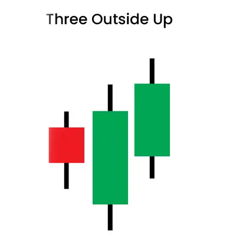
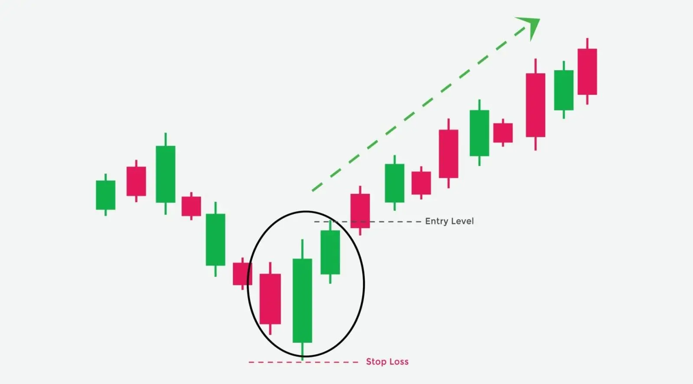

तीन लगातार कैंडलस्टिक तीन आउटसाइड अप पैटर्न बनाते हैं, जो आमतौर पर एक बिशलेषी रुझान के बाद दिखाई देता है। इन कैंडलस्टिक की चलन सदैव यह दर्शाती है कि क्या एक रुझान उलटा होने वाला है या नहीं।
एक एकल बिशलेषी कैंडल के बाद, दो बुलिश कैंडल पैटर्न बनाने के लिए आते हैं। उल्टे-रुझान ट्रेडिंग टैक्टिक्स काम करने के लिए, इस पैटर्न की सटीक जांच महत्वपूर्ण होती है।
| Formation |
आइए देखें कि यह कैंडलस्टिक पैटर्न कैसे बनता है-
1. तीन आउटसाइड अप पैटर्न दिखाई देने के लिए बाजार कम होना चाहिए।
2. पैटर्न का पहला कैंडल काला होगा, जो एक निम्नावर्ती रुझान को दर्शाता है।
3. अगले में एक बड़ी सफेद कैंडल बनेगी। यह पहले काले कैंडल को अपने सही बॉडी में पूरी तरह से समाहित करने के लिए पर्याप्त लंबी होगी।
4. तीसरी और अंतिम कैंडल, जो तीन आउटसाइड अप दर्शाती है, सफेद होनी चाहिए। यह कैंडल, हालांकि, दूसरी कैंडल से ऊपर बंद होनी चाहिए। इससे यह पता चलता है कि निम्नावर्ती रुझान की दिशा बदल रही है।
| What Traders Interpret from a Three Outside Up Pattern |
पहली मोमबत्ती नीचे के बंद होने से, इससे एक बाजार बिक्री के ट्रेंड को जारी रखते हुए, बेहद बिक्री हुई है, जो बिक विश्वास को बनाती है।
दूसरी मोमबत्ती नीचे से शुरू होती है लेकिन त्वरित उलट जाती है और पहले टिक के माध्यम से एक बुलिश शोषण दिखाती है। इसमें से एक लाल झंडा उठता है जो बिक लोगों को चेतावनी देता है कि उन्हें वे लाभों को लेने या रुकने के लिए तैयार होना चाहिए क्योंकि एक पलटवार संभव है।
स्टॉक जारी रहता है, अब मूल शक्ति से ऊपर के मूल्यों के साथ, एक बुलिश आउटसाइड डे मोमबत्ती को पूरा करते हुए। यह बुलिश सेंटिमेंट को बढ़ाता है और खरीद संकेतों को ट्रिगर करता है, जो सुरक्षा तीसरी मोमबत्ती पर एक नया उच्च बनाने पर सत्यापित होता है।
| Trading Example |
इस तकनीकी संकेतक की महत्वपूर्ण विशेषताओं में से एक यह है कि एंगलिंग कैंडलस्टिक का आकार, जो तीन में से दूसरा होता है, उसकी शक्ति को निर्धारित करता है। जितना अधिक दूसरी मोमबत्ती बड़ी होती है, तीन आउटसाइड अप पैटर्न का उतना ही अधिक प्रभावशाली होता है।
जैसे-जैसे नकारात्मक डाउनट्रेंड छोटा होता जाता है, उसकी संकेतों की शक्ति कम होती जाती है। जैसे-जैसे दूसरी मोमबत्ती के साथ मूल्य चलन बढ़ता है, बलिश संदेशों का महसूस होता है कि नकारात्मक संदेशों से अधिक हो रहे हैं।
